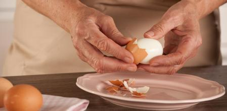
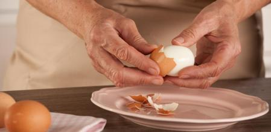
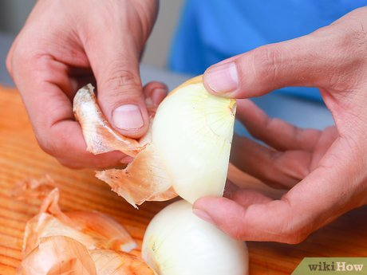
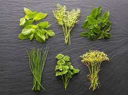
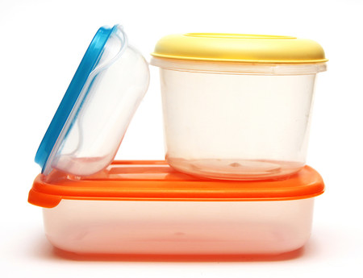
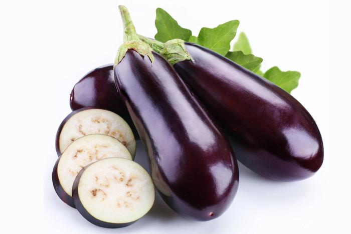

Pelar huevos
Si quieres pelar fácilmente los huevos duros solo tienes que añadir un buen chorro de vinagre al agua de cocción, de esta manera, el ácido ablandará la cáscara y hará que los huevos se pelen con mayor facilidad.
Cocipedia |
Contáctame |
En esta web podrás encontrar tips de cocina básicos, útiles para agilizar tu desempeño en la cocina en el día a día.

Haz tu vida más fácil con estos sencillos tips
Pelar huevosSi quieres pelar fácilmente los huevos duros solo tienes que añadir un buen chorro de vinagre al agua de cocción, de esta manera, el ácido ablandará la cáscara y hará que los huevos se pelen con mayor facilidad. |
Pelar cebollas sin llorarPara que no llores mientras que troceas las cebollas te aconsejamos meter las cebollas antes en el congelador unos 20 minutos, de esta manera conseguirás evitar ese lagrimeo al cortarlas que tanto nos molesta. |
Conservar las hierbas aromáticasLa mejor manera de tener las hierbas aromáticas siempre frescas en la cocina es cortarlas, ponerlas en una cubitera, cubrirlas con aceite de oliva y después congelarlas, ya que de esta manera la humedad del aceite favorecerá una buena conservación de las hierbas. |
Quitar el olor de ajo de las manosSeguro que siempre que pelas ajos se te queda el olor pegado en las manos. Pero si quieres resolver este problema, cuando termines con los ajos, frótate las manos debajo del agua con una superficie de acero inoxidable (como la hoja del cuchillo) durante 30 segundos y verás como desaparecerá el olor a ajo. |
Quitar el olor a los tupper de plásticoCuando un tupper de plástico ha cogido olor fuerte de algún alimento, solo tienes que rellenarlo con papel de periódico arrugado, luego lo cierras con la tapa un par de días y verás como el olor desaparece. |
Quitar el amargor de las berenjenasLas berenjenas dependiendo del tamaño que tengan pueden estar más o menos amargas y para solucionarlo, échales sal cuando las cortes y déjalas reposar al menos 5 minutos, después retírales la sal con papel de cocina y ya estarán listas para cocinarlas, verás que siempre te salen ricas. |